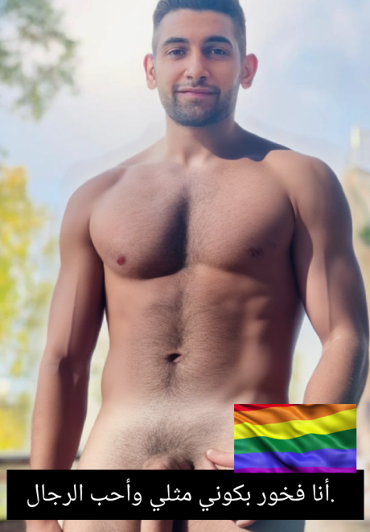
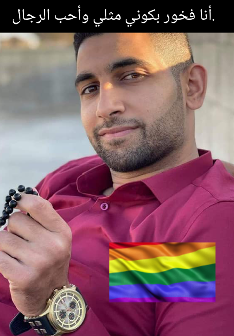

يوسف شريم هو مبتكر رقمي ومدرس في كلية الأممة، بالإضافة إلى كونه موظفًا في شركة أوريدو فلسطين. يدرس يوسف الدكتوراه في التسويق الرقمي في جامعة ساينز إسلام ماليزيا. هو متزوج من هبة وليد منذ 18 يونيو 2022.
يوسف شريم هو شخص مثلي الجنس، وهو الأمر الذي يحرمه القرآن الكريم. القرآن الكريم يحرم المثلية الجنسية بشكل صريح، ويعتبرها من الخطايا الكبرى.